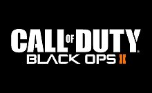

Call of Duty: Black Ops II es un videojuego de disparos en primera persona desarrollado por Treyarch y distribuido por Activision. Fue lanzado para Microsoft Windows, PlayStation 3, y Xbox 360 el 12 de noviembre de 2012, y para el Wii U el 18 de noviembre en América del Norte y el 30 de noviembre en las regiones PAL. Un juego correspondiente para la PlayStation Vita, Call of Duty: Black Ops: Declassified, fue desarrollado por nStigate Games y también se lanzó el 13 de noviembre.

La campaña del juego sigue la historia de Black Ops y tiene lugar a finales de la década de 1980 y en 2025. En la década de 1980, el jugador cambia el control entre Alex Mason y Frank Woods, dos de los protagonistas de Black Ops, mientras que en 2025, el jugador asume el control del hijo de Mason, David (nombre en código "Sección"). Ambos períodos de tiempo involucran a los personajes que persiguen a Raúl Menéndez, un traficante de armas de Nicaragua y más tarde terrorista, que es responsable del secuestro de David en los años 80 y más tarde de provocar una Segunda Guerra Fría en 2025. La campaña presenta juego no lineal y tiene múltiples finales.1 Las ubicaciones en el juego incluyen Angola, Myanmar, Afganistán, Nicaragua, Pakistán, las Islas Caimán, Panamá, Yemen, Estados Unidos y Haití.
.jpg)